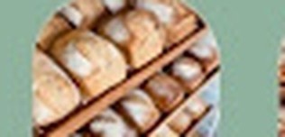
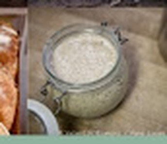
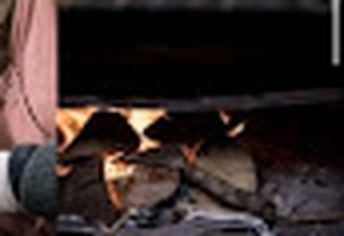
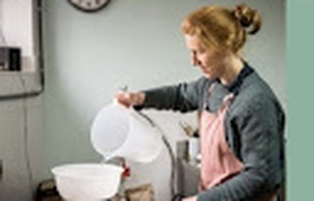
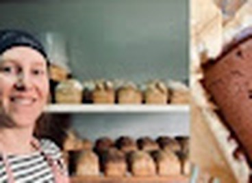
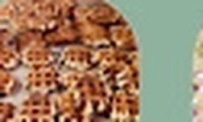
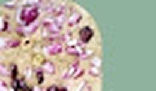
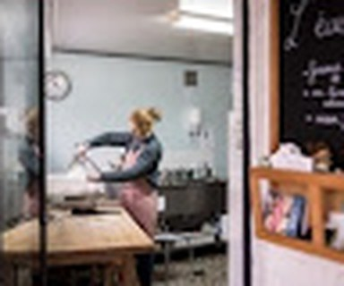
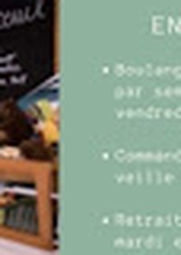
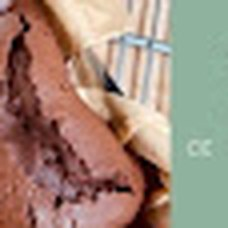

Pain au levain
Un pain qui nourrit et se digère facilement
Au Sart-Tilman, Liège
Du pain au levain naturel, préparé avec des farines biologiques et locales, cuit dans un vrai four à bois — pour retrouver le goût du pain artisanal.


Chaque miche naît d'un levain 100% naturel, pétri à la main selon des gestes ancestraux, puis cuite dans un authentique four à bois. Un pain qui nourrit et se digère facilement — comme celui d'autrefois.


L'Écureuil voit le jour à la mi-octobre 2020, porté par Céline Van Enis. De retour en Belgique après une vie en pleine campagne française où elle s'approvisionnait directement chez les producteurs locaux, elle a voulu bâtir « un projet qui apporte un épanouissement lié à de fortes valeurs environnementales ».
Diplômée d'un master en sciences de gestion, elle passe le certificat de boulanger et se forme auprès de plusieurs artisans qui lui transmettent les gestes et les secrets du levain traditionnel.
Par choix, l'atelier n'allume son four que deux jours par semaine — environ 150 pains par fournée — un rythme pensé pour concilier l'exigence du métier avec sa vie de maman de trois enfants, et pour rester fidèle à une logique de circuits courts et de production raisonnée.
Meulées près de chez nous, sans détour inutile.

Un pain qui nourrit et se digère facilement

Pour petits et grands gourmands
Gaufres de Liège (mardi) · Tartelettes · Cookies · Muffins · Rochers coco · Crumble · Sablés

Pour l'heure de l'apéro
Sablés au parmesan · Focaccia · Amandes & noix de cajou grillées



469 rue de la Belle Jardinière
(côté jardin)
4031 Liège (Sart-Tilman)
Céline Van Enis